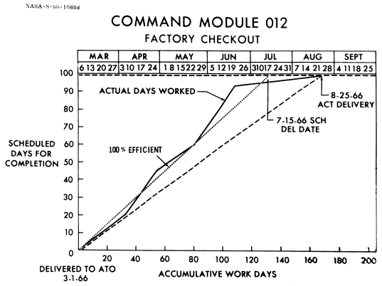

For a time, the mission called AS-204 had two flight plans. AS-204A, manned by Gus Grissom, Edward White, and Roger Chaffee,* was "to verify spacecraft crew operations and CSM subsystems performance for an earth-orbit mission of up to 14 days' duration and to verify the launch vehicle subsystems performance in preparation for subsequent operational Saturn IB missions." The flight would be in the last quarter of 1966 from Launch Complex 34 at Cape Kennedy. AS-204B, on the other hand, would be an unmanned mission with the same objectives (except for crew operations), to be flown only if spacecraft and launch vehicle had not qualified for manned flights. And there were doubts. Gas ingestion in the service module propulsion system in AS-201 and the resulting erratic firing had caused some misgivings, although these had been somewhat allayed by AS-202.50
As in early Mercury and Gemini manned flights, stress was laid on engineering and operational qualification rather than on experiments - whether medical or scientific. In December 1966, with only 9 experiments assigned to AS-204, 30 operational functions had a higher priority. And even then Slayton complained that the crew was not getting enough time in the new simulation and checkout facilities because of the experiments. Despite his arguments, the second Apollo crew (Walter Schirra, Donn Eisele, and Walter Cunningham, with Frank Borman, Stafford, and Collins as backups), announced on 29 September, was scheduled for a heavier workload of experiments.51 As technical troubles came to the fore, however, emphasis on experiments shifted.
Command module 012 and service module 012 in workstands at the North American Aviation plant, Downey, in 1965.

The chart shows the factory checkout workdays (1966).
North American should have shipped spacecraft 012 from Downey to Kennedy in early August, but "eleventh hour problems associated with the Command Module Environmental Control Unit water glycol pump failure resulted in a NAA NASA decision to replace the ECU with the unit from SC 014." The Customer Acceptance Review revealed some environmental control items that still needed to be corrected, but NASA allowed North American to ship 012 to Florida on 25 August anyway. Once it arrived, John G. Shinkle, Apollo Program Manager at Kennedy, complained about the amount of engineering work that still had to be done. More than half of it, he said, should have been finished before the spacecraft left the factory.52
CM-012 - "Apollo One" - arrives at Kennedy Space Center, 26 August 1966.
Astronauts Grissom (left), Chaffee, and White check the communications headgear in preparation for what was to have been the first manned Apollo flight - Apollo-Saturn 204, scheduled for 21 February 1967.
While flight-preparation crews were having problems, Grissom, White, and Chaffee were finding bottlenecks in training activities. The chief problem was keeping the Apollo mission simulator current with changes being made in spacecraft 012. At the Cape, Riley D. McCafferty said, there were more than 100 modifications outstanding at one time. Grissom, McCafferty later recalled, would "tear my heart out" because the simulator was not keeping up with the spacecraft. Eventually, the first Apollo commander hung a lemon on the trainer.53
Getting the spacecraft to the Cape did not really improve conditions. The environmental control unit needed to be replaced again, which held up testing in the vacuum chamber. AiResearch shipped the new unit from its West Coast plant to Kennedy on 2 November. Within two weeks, it was installed and testing was begun. It was then returned to California for further work. By mid-December, the component was back in Florida and in the spacecraft. Meanwhile, the service module had been waiting in the vacuum chamber for the command module. While it was sitting there, a light shattered, and falling debris damaged several of the maneuvering thrusters.54 But this was not the only cause for worry about the service module.
On 25 October at the North American factory, the service module for spacecraft 017 was undergoing routine pressure tests of the propulsion system's propellant tanks when the tanks suddenly exploded. No one was injured, but North American and NASA engineers were baffled as to the cause for the next few weeks. The tanks had not been overpressurized, test procedures had not been relaxed, and no design deficiencies were apparent; yet the fuel storage tank had failed with a bang. Since the service module for spacecraft 012 had been through identical tests, Shea was vitally concerned with unraveling this riddle before Grissom and his group flew.
William M. Bland and Joseph N. Kotanchik were sent from the Manned Spacecraft Center to Downey to help North American hunt for the trouble, and Houston set up a parallel test to verify the results. They learned that the methanol (methyl alcohol) employed as a test pressurant fluid caused stress corrosion (or cracking) of the titanium alloy used for the propellant tanks. Replacing the methanol with a fluid that was compatible with titanium would eliminate this problem. In the meantime, the tanks were removed from service module 012 and found to be free of any dangerous corrosion.55
In September, Mueller reminded Gilruth of the upcoming Design Certification Review. Board membership would, he said, include himself, Gilruth, von Braun, and Debus. The group met on 7 October and agreed that the space vehicle conformed to design requirements and was flightworthy, provided several deficiencies were corrected. Phillips sent the list to Lee B. James at Marshall, Shinkle at Kennedy, and Shea at the Manned Spacecraft Center, urging speedy clearance. Shinkle had already registered his complaints about spacecraft 012; now he added that Houston should insist on better spacecraft being shipped to the Cape. He pointed out the major problems that had been found: a leak in the service propulsion system, problems with the reaction control system, troubles in the environmental control unit, and even design deficiencies in the crew couches that required North American engineers to travel from Downey to the Cape to correct them.56
In early December, NASA reluctantly surrendered its plans for launching the first manned Apollo flight before the end of 1966. Mueller and Seamans then reshuffled the flight schedule, delaying AS-204 until February 1967 and scrubbing the scheduled second mission. Experimenters who had planned to place their wares aboard Schirra's spacecraft were brushed aside. Following AS-204, NASA planned to fly the lunar module alone and then a manned Block II command and service module, No. 101, in August 1967 to rendezvous with unmanned LM-2, the LM being lofted into orbit by a Saturn IB in a mission dubbed AS-205/208.
If everything went well, NASA hoped to get two crews besides Grissom's spaceborne before the end of 1967, with at least one riding a Saturn V. Replacing the Schirra team as the second Apollo flight crew were James McDivitt, David Scott, and Russell Schweickart (backed by Thomas Stafford, John Young, and Eugene Cernan) for a workout of the command module and lander in earth orbit. To fly the Saturn V mission, AS-503, NASA picked Frank Borman, Michael Collins, and William Anders (with Charles Conrad, Richard Gordon, and Clifton Williams as backups); they would ride the spacecraft into orbit and out as far as 6,400 kilometers above the earth.57
After all this flight shuffling, the Apollo program seemed to be in fair shape at the end of 1966. North American had finished the last of the manufacturing work on the earth-orbital version of the command and service modules on 16 September and could now concentrate on improving the lunar-orbital spacecraft.58 The lunar module still had problems, but Grumman was making headway in resolving them. The pathway to the moon appeared to be clearing, as NASA stood on the threshold of Apollo manned space flight operations.
* NASA announced 21 March 1966 that these three astronauts would fly the first manned Apollo mission.
50. William Lee memo, "Initial Mission Directive for Mission 204," 29 Jan. 1965; Maynard to Apollo Trajectory Support Off., "Revisions to Apollo Mission 204A objectives and mission requirements," 22 April 1965, with enc.; John H. Boynton to Asst. Dir., Flight Ops., "Definitions for various mission profiles," 4 Aug. 1965; TRW Systems, "Mission Requirements for Apollo Spacecraft and Saturn Launch Vehicle Development, Mission Apollo Saturn 204B," 2132-H001-RU-000, 3 Sept. 1965; MSC, FOD, "Apollo Flight Operations Plan: AS-204A," 1 Dec. 1965; NASA, "Mission Operations Plan, Apollo-Saturn 204," OMSF mission operations directive 4, M-D MO 2200.019, 7 Dec. 1965; Shea memo, "Back-up Missions for Apollo," 12 Jan. 1966; anon., mission 204B outline notes, 14 April 1966; NASA, "Apollo Program Flight Mission Directive for Apollo-Saturn 204A Mission," OMSF Apollo program directive 20, M-D MA 1400.043, 15 July 1966; MSC, "Gemini and Apollo Crews Selected," news release 66-20, 21 March 1966.
51. Abstract of Meeting on Experiments for the Apollo AS-204 Mission, 12 May 1966; EXPO, "Apollo Earth Orbital Experiments," 1 Aug. 1966; Hodge memo, "Flight Control Experiments Operations Plan for AS-204," 18 Oct. 1966, with enc.; Maynard memo, "Objective Priorities for Mission AS-204," 23 Dec. 1966; Slayton memo for Mgr., EXPO, "AS-204 Medical Experiments," 20 Jan. 1966; NASA, "Second Crew Named for Apollo Flight," news release 66-260, 29 Sept. 1966.
52. MSC, CSM CEB, "C and SM Schedules Engineering Report," 19 Aug. 1966; Lanzkron memo, "NAA CARR Action Responses - CSM 012," 4 Oct. 1966, with encs.; Brig. Gen. Carroll H. Bolender to Phillips, NASA routing slip, with enc., Bolender memo for record, no subj., 11 Oct. 1966; Lanzkron to Mgr., ASPO, "EO's on Spacecraft 012," 8 Nov. 1966.
53. Riley D. McCafferty, interview, Cocoa, Fla., 15 Nov. 1969; Slayton to CSM Contracting Officer, "Acceptance of Apollo Mission Simulator No. 2," 12 Aug. 1966.
54. Edward R. Mathews and Hugh E. McCoy TWXs to NASA Hq. et al., "Daily Status Report, AS-204, dated October 27, 1966," 28 Oct. 1966, and "Daily Status Report, AS-204, dated October 28, 1966," 29 Oct. 1966; Lanzkron TWX to KSC, Attn.: Maj. Gen. John G. Shinkle, 28 Oct. 1966; Phillips to Assoc. Admin., NASA, "CSM ECS Status as of 28 October 1966," 1 Nov. 1966; Phillips to Mueller, no subj., 1, 2, and 15 Nov. 1966; James F. Saunders, Jr., to Chief, Apollo Spacecraft Test, "012/AS-204 KSC activity for 12/16/66," 16 Dec. 1966, with annotations by Phillips and LeRoy E. Day, 18 Dec. 1966.
55. Markley to NASA Hq., Attn.: Phillips, "ASPO Weekly Project Status Report to MSF," 26 Oct. 1966; Frank J. Magliato, NASA Hq., note to Webb and Robert C. Seamans, Jr., "Test Failure of Service Module 017," 26 Oct. 1966; Robert R. Ridnour, MSC, RASPO-Downey, TWXs to MSC et al., "Status Report Number One, Test Failure Investigation of SM 017," 27 Oct. 1966, and "Status Report Number Two, Test Failure Investigation of SM 017," 28 Oct. 1966; Shea TWX to NASA Hq. et al., "Interim Problem Bulletin (Telegram)," 2 Nov. 1966; Lanzkron TWX to KSC, Attn.: Chief, Manned Spacecraft Off., 14 Nov. 1966; Lanzkron TWX to KSC, Attn.: Shinkle, 14 Nov. 1966; William M. Bland, Jr., MSC, RQ&A, to Mgr., ASPO, "Report on trip to KSC, November 14, 1966," 15 Nov. 1966; Shea briefing for Webb et al., [15 Nov. 1966]; Phillips to Mueller, 15 Nov. 1966; Shea to Kurt H. Debus, KSC, 25 Nov. 1966; anon., "Summary of Damage to SC 017 Service Module," [December 1966]; Shea to NASA Hq., Attn.: Phillips, "Test Investigation for Service Module 017 Tank Failure," 16 Feb. 1968; Joseph N. Kotanchik to Dep. Mgr., Apollo Reliability and Quality Assurance, "Preliminary Report by GAO on their look at S/C 017 Tank Failure," 4 June 1968; Bland to Mgr., ASPO, "Preliminary Report by GAO on their look at S/C 017 Tank Failure," 7 June 1968, with enc., "Summarization of Audit Findings on Review of Explosive Failure of the Apollo Spacecraft 017 Service Module under the Apollo Program at North American Rockwell Corporation, Space Division," n.d.
56. Shea memo, "Design Certification Review for Spacecraft 012," 24 June 1966; Mueller to Gilruth, 2 Sept. 1966; Phillips letter, "AS-204 Design Certification Review," 12 Oct 1966, with enc.; Phillips to MSFC, MSC, and KSC, Attn.: Lee B. James, Shea, and Shinkle, "AS-204 Design Certification Review," 20 Oct. 1966; Shinkle, KSC, to MSC, Attn.: Shea, 4 Nov. 1966, with encs.
57. Everett E. Christensen TWX, "MSF Mission Operations Schedule Forecast for November 1966," 18 Nov. 1966; Phillips TWX, ["Apollo Program Directive No. 4F (Interim)"], 16 Nov. 1966; Christensen TWX, "MSF Mission Operations Schedule for December 1966," 8 Dec. 1966; Shea to Phillips, 8 Dec. 1966; William O. Armstrong, interview, Washington, 24 Jan. 1967; [Mueller] to Seamans, "Apollo Program Adjustment," 7 Dec. 1966, with enc.; NASA, "NASA Names Crews for Apollo Flights," news release 66-326, 22 Dec. 1966.
58. House Subcommittee on NASA Oversight, Pace and Progress, pp. 1137-1219.